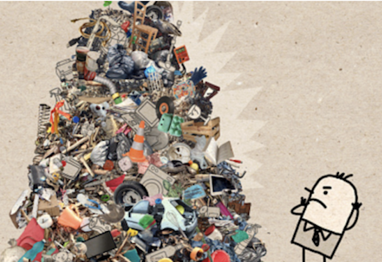
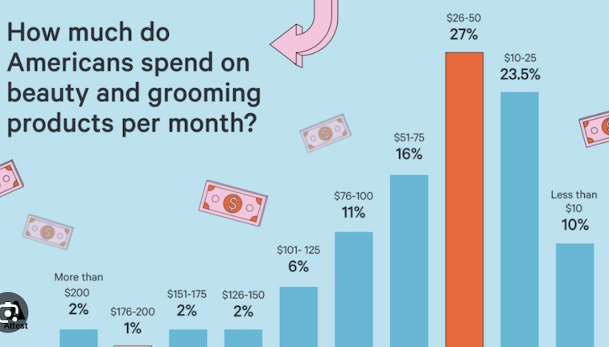

Welcome to my Project Pan! You may find some info, focus products, and completed products.
Project Pan is a popular beauty trend and intentional consumption challenge where individuals commit to using up their makeup, skincare, and beauty products completely—hitting the metal "pan" inside containers—before purchasing replacements. It focuses on reducing waste, decluttering, saving money, and curbing overconsumption.
Over-consumerism is driven by aggressive marketing, social media-induced FOMO (fear of missing out), and easy access to fast, cheap goods. Societal pressure, rising affluence, and planned obsolescence—designing products to fail quickly—fuel continuous purchasing. These behaviors are psychologically linked to impulse buying and treating possessions as status symbols. In additon, it creates funadamental world-wide problems that third world countries have to live with: Full Landfills, Polluted Rivers, and Harm to entire ecosystems. The photo on the right shows a graphic of the trash amountage in our country. On the right the photo depicts the date of the Average American as of 2022

